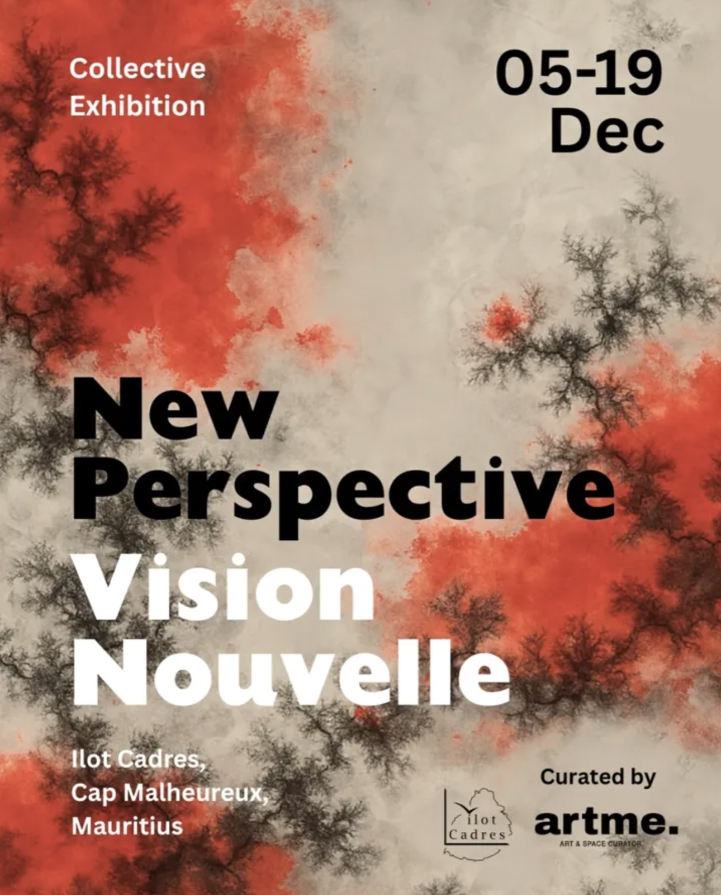
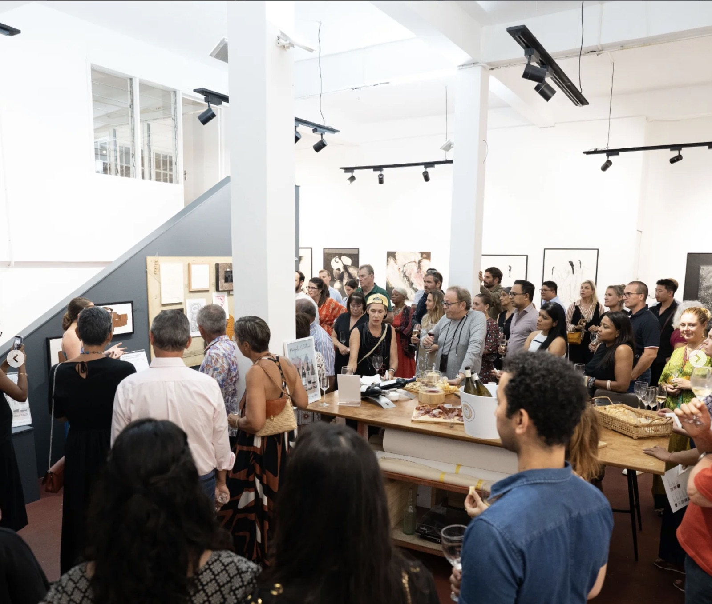
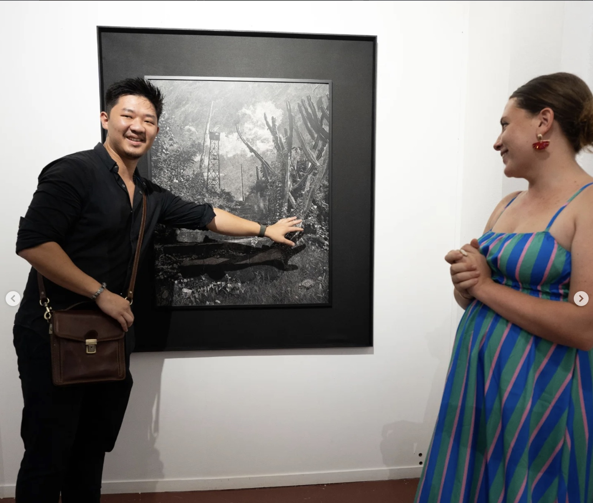
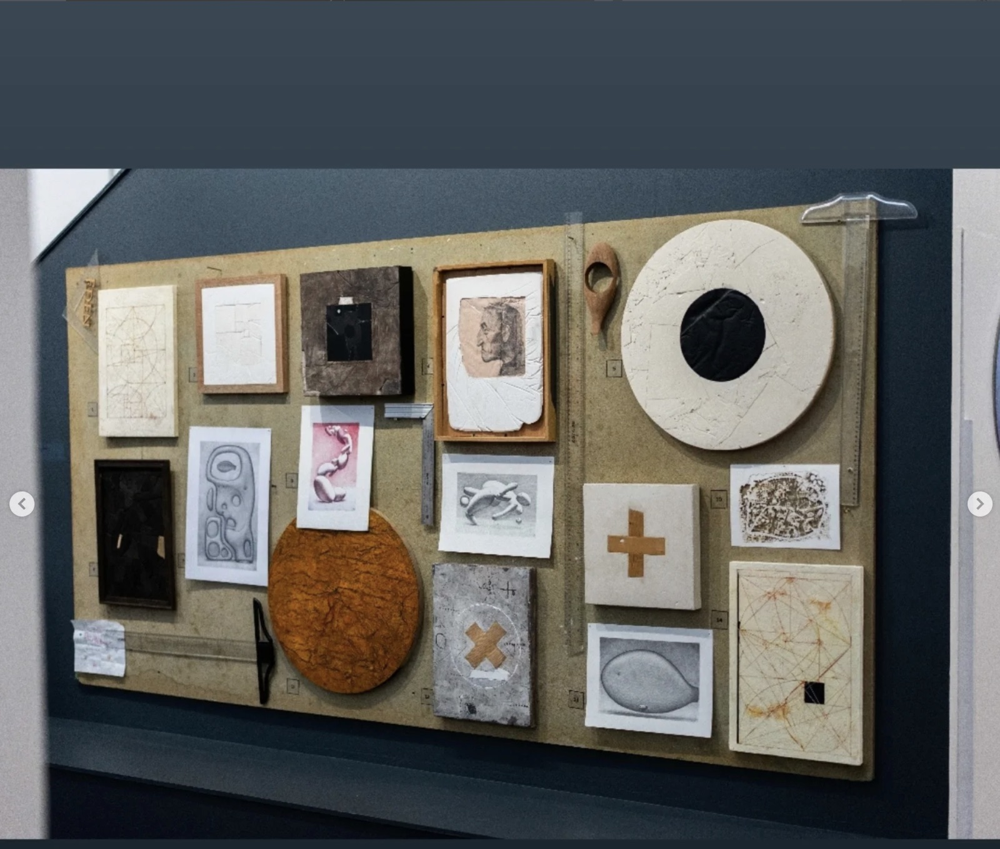
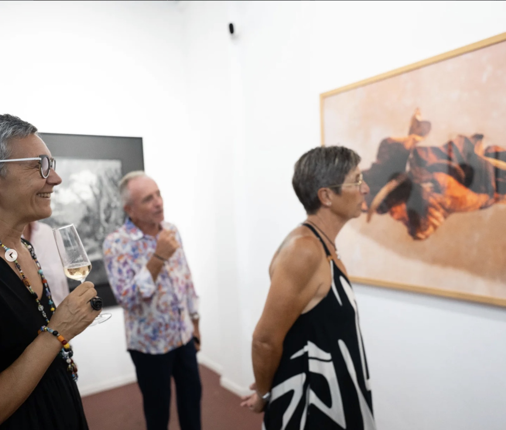

Exposition collective ouverte au public du 5 au 19 décembre 2025, à artme creative space / L'Ilot Cadres, Cap Malheureux, Île Maurice.
« Vision nouvelle » (New Perspective) is an immersion into the curator's gaze — an invitation to perceive the sensible, to feel what the eye senses before the mind understands.
The exhibition offers a deeply sensory experience: textures, materials, and gestures become the true guiding threads of the journey.
Here, everything is scratched, scored, blurred, thickened, glued, soaked in resin, charged with oil or charcoal, shaped into ceramics. Wood breathes, paper folds, clay is caressed, shaped, pressed, carved, reinvented. Metal is hammered, heated, twisted into a sharp, almost shrill sound, a material that protests before yielding.
artme creative space / L'Ilot Cadres — Cap Malheureux, Île Maurice.



